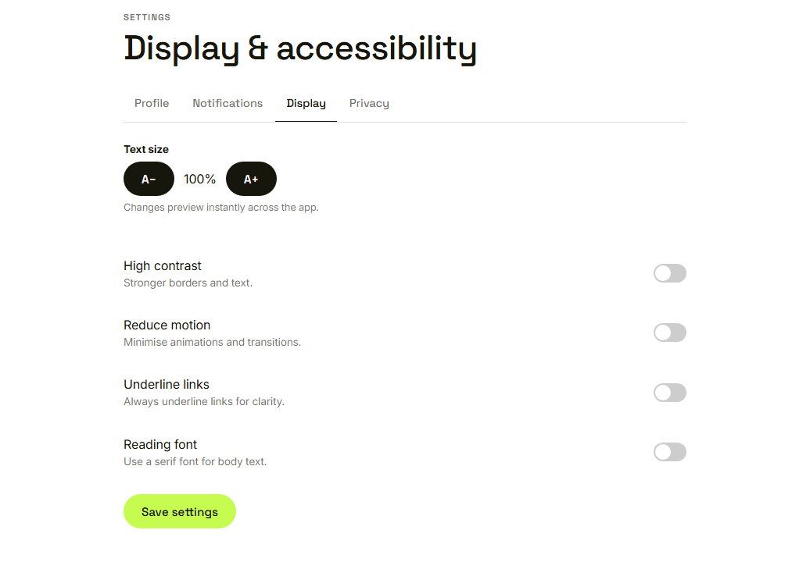
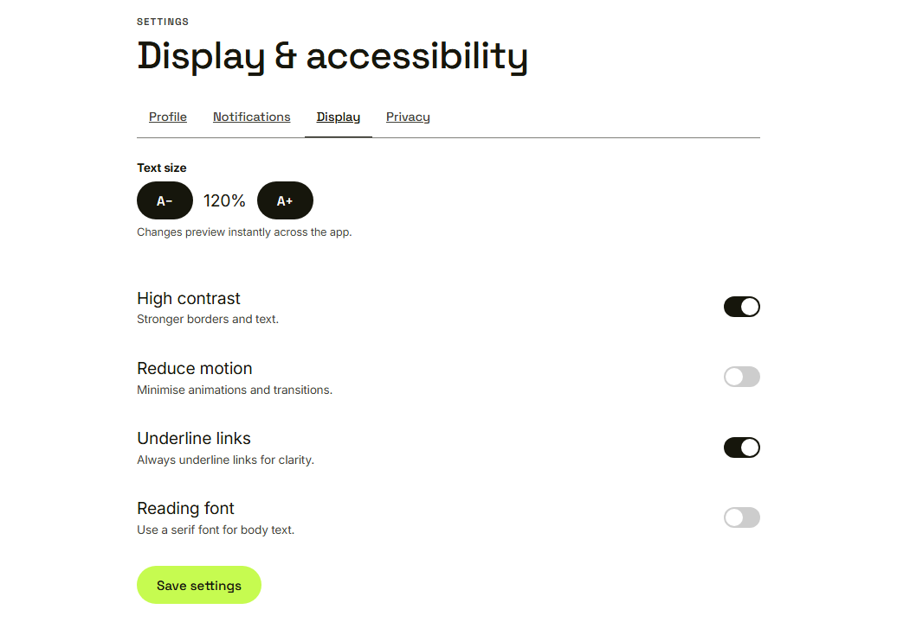
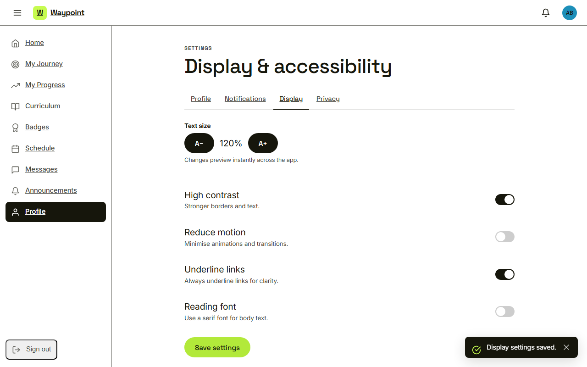
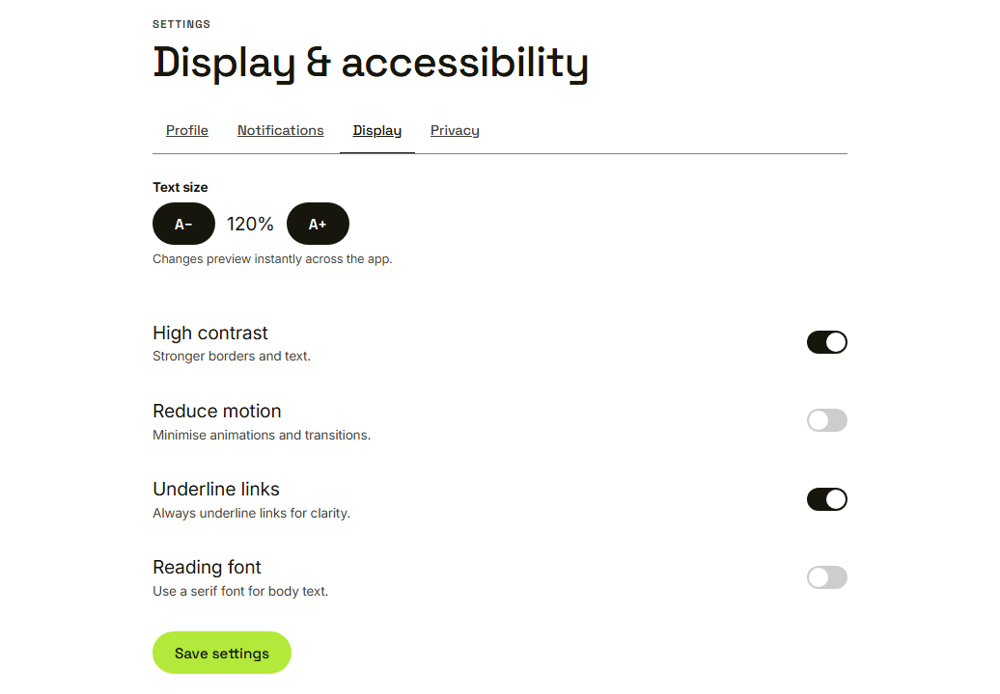

Waypoint · Video 084
Making Waypoint easier to read
Text size, contrast, motion, links and font
Display and accessibility

Text size and four switches
A live preview

Changes preview instantly across the app
Display settings saved

Saved with a short message
Still there after a reload

The choice comes back
Things to remember
Text size, high contrast, reduce motion, underline links, reading font
Every change previews live across the app
Saved choices come back after a reload